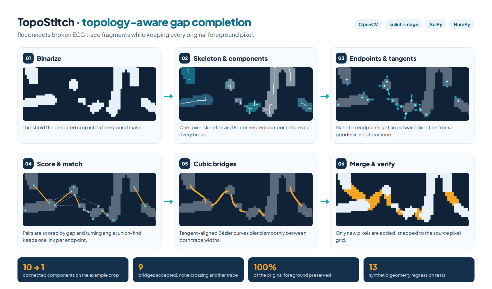
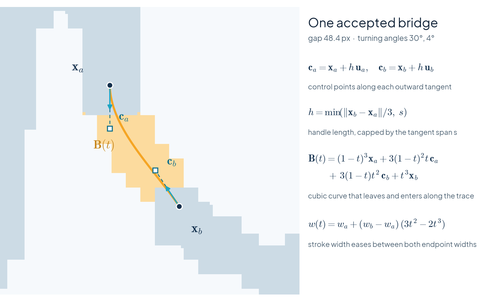

1Problem
Scanned and photographed ECGs often come apart into disconnected fragments once they are thresholded, which blocks any later digitization of the signal. A repair must reconnect fragments that belong to the same trace, must not join fragments that do not, and must leave the observed trace untouched: added pixels should follow the trace’s own direction, width, and pixel grid.
Let \(M\) be the binary foreground mask, \(\mathcal{S}\) its one-pixel skeleton, and \(D\) its distance transform. The output is \(M\cup B\), where \(B\) is a set of bridge pixels chosen so that the number of 8-connected components is minimized subject to \(B\cap M=\varnothing\) and no bridge crossing a third fragment.
2Method

| Stage | Operation |
|---|---|
| 1 Binarize | Threshold the prepared crop into the mask \(M\); no later step removes a pixel of \(M\). |
| 2 Skeleton | One-pixel skeleton \(\mathcal{S}\) (scikit-image) and 8-connected components (OpenCV). |
| 3 Tangents | Endpoints of \(\mathcal{S}\), each with an outward direction and local width (Eq. 1). |
| 4 Match | Score endpoint pairs from different fragments (Eq. 2); accept greedily with union-find. |
| 5 Bridge | Join each accepted pair with a tangent-aligned cubic Bézier curve (Eq. 3). |
| 6 Merge | Reject bridges that cross a third fragment or cover trace; snap to the pixel grid (Eq. 4); merge. |
2.1 Endpoints and outward tangents
\(Q\) holds the skeleton points that a geodesic walk of length at most \(s=15\) px reaches at 70% or more of its range, so \(\mathbf{u}\) points from the trace body toward the gap. The local width is \(w=\max(1,\,2\,\mathrm{median}\,D-1)\).
2.2 Pair scoring and matching
A pair is a candidate only if the gap is at most 65 px, \(\max(\theta_a,\theta_b)\le 110^\circ\), and \(\tfrac12(\theta_a+\theta_b)\le 70^\circ\). Candidates are accepted in order of increasing \(S\); each endpoint is used at most once, and union-find skips pairs whose fragments are already connected.
2.3 Tangent-aligned bridge
The control points lie on the outward tangents, so the curve leaves \(\mathbf{x}_a\) and arrives at \(\mathbf{x}_b\) along the trace. The stroke width follows \(w(t)=w_a+(w_b-w_a)(3t^2-2t^3)\), so it meets each end without a thin neck (Figure 3).

2.4 Matching the source pixel grid
\(x_k\) are positions of foreground edges along one axis, weighted by their counts \(\omega_k\). When \(R(P^\star)\ge 0.78\) on both axes, bridges are resampled onto the detected block lattice (about 5 px on the example); with weaker evidence the native pixels are kept.
3Results
| Method | Components | Note |
|---|---|---|
| Input | 10 | – |
| Row-wise constrained baseline | 10 | – |
| Iterative endpoint variant | 5 | – |
| Component-distance baseline | 1 | Adds broad connectors (global thickness estimate) |
| TopoStitch | 1 | Keeps every input pixel; bridge widths match both endpoints |
Finding. TopoStitch reduces 10 components to 1 with 9 accepted bridges, none crossing another fragment. All original foreground pixels are preserved and 4,025 pixels are added. The geometry is covered by 13 synthetic regression tests.
Scope: the demonstration covers connectivity on prepared crops; time–voltage calibration and clinical validation are not part of this project.